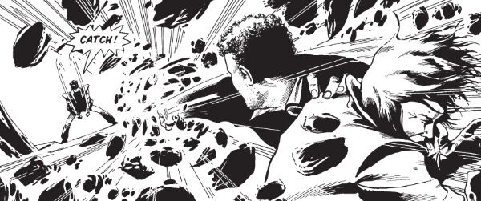

Self-centered party hound and popstar Zenith also has inherited superpowers. How will he cope when Nazi elder gods set out to consume the multiverse?
Art by Steve Yeowell
| Story Title | Parts | Pages | w indicates a wraparound coverCovers | Year(s) | Issues | Writer | Artist | Colourist | Letterer |
|---|---|---|---|---|---|---|---|---|---|
| [Phase 1] | 16 | 81 | 535: Steve Dillon 536: Brendan McCarthy 540: Steve Dillon 544: Steve Dillon 549: Dave Gibbons5 | 1987 | 535-550 | Grant Morrison | Steve Yeowell | <-- 2pp, [b&w] | Mark King |
Supertitled "A Zenith Interlude".Interlude: 1 Whitlock | 1 | 5 | 558: Steve Dillon 1 | 1988 | 558 | Grant Morrison | Steve Yeowell | [b&w] | Mark King |
Supertitled "A Zenith Interlude".Interlude: 2 Peyne | 1 | 5 | 0 | 1988 | 559 | Grant Morrison | Steve Yeowell | [b&w] | Mark King |
| Phase II | 18 | 92 | 590: Steve Yeowell 595: Steve Yeowell 599: Jim McCarthy 605: Steve Yeowell 4 | 1988 | 589-606 | Grant Morrison | Steve Yeowell | [b&w] | Mark King: 1‑8 Gordon Robson: 9‑18 various |
| Interlude: 3 Maximan | 1 | 8 | 0 | 1988 | WS1 | Grant Morrison | M. Carmona | <-- 1p, [b&w] | John Aldrich |
| Phase III [part 1] | 9 | 40 | 627: Steve Yeowell 630: Steve Yeowell 2 | 1989 | 626-634 | Grant Morrison | Steve Yeowell | [b&w] | Gordon Robson |
Title on page: "A Zenith Interlude: Shadows & Reflections".Interlude: 4 Mandala | 1 | 8 | 0 | 1989 | 2KA'90 | Grant Morrison | Jim McCarthy | <-- 6pp, [b&w] | Gordon Robson |
| Phase III [part 2] | 17 | 87 | 653: Steve Yeowell 670: Steve Yeowell 2 | 1989-1990 | 650-662, 667-670 | Grant Morrison | Steve Yeowell | [b&w] | Gordon Robson |
| Phase IV | 16 | 82 | 792: Steve Yeowell 797: Steve Yeowell 805: Steve Yeowell 3 | 1992 | 791-806 | Grant Morrison | Steve Yeowell | Gina Hart | Annie Parkhouse |
| zzzzenith.com | 1 | 8 | 0 | 2000 | p2001 | Grant Morrison | Steve Yeowell | [b&w] | Ellie de Ville |
| >> Text Stories << | |||||||||
| Tales of the Alternative Earths | 1 | 6 | 0 | 1990 | WS3 | Mark Millar | Simon Coleby | <-- | n/a |
Faux magazine article.InSIGHT Profile: Permission to Land | 1 | 2 | 0 | 2017 | 2050 | Martin Howe | Steve Yeowell | [spot color] | n/a |
| >> Posters / Teasers << | |||||||||
| Zenith | 1 | 1 | 0 | 1987 | 534 | editorial | Steve Yeowell | [b&w] | n/a |
| Fax-to-the-Max [Zenith] | 1 | 1 | 0 | 1988 | 562 | Grant Morrison | Steve Yeowell | <-- | n/a |
| Zenith: The Power & the Glory Tour | 1 | 1 | 0 | 1989 | 612 | n/a | Steve Yeowell | <-- | n/a |
Star Scan.Archie | 1 | 1 | 0 | 1989 | 647 | n/a | Steve Yeowell | <-- | n/a |
| New Tour Begins 4 July - Everywhere! | 1 | 1 | 0 | 1992 | 787 | n/a | Steve Yeowell | <-- | n/a |
| [Zenith] | 1 | 1 | 0 | 1999 | p2000 | n/a | Steve Yeowell | <-- | n/a |
From Great Moments in Thrill‑PowerZenith vs Masterman | 1 | 1 | 0 | 2007 | 1526 | n/a | Steve Yeowell | [b&w] | n/a |
| >> Features << | |||||||||
Contents page.A Midsummer Night's Scene | 1 | 1 | 0 | 1988 | SFS11 | unknown | Steve Yeowell | [b&w] | unknown |
| Data Bytes: Zenith | 1 | 1 | 0 | 1999 | p2000 | editorial | Steve Yeowell | [monochrome] | n/a |
| year | episodes | pages |
| 1983 | 0 | 0 |
| 1984 | 0 | 0 |
| 1985 | 0 | 0 |
| 1986 | 0 | 0 |
| 1987 | 16 | 81 |
| 1988 | 21 | 110 |
| 1989 | 20 | 99 |
| 1990 | 7 | 36 |
| 1991 | 0 | 0 |
| 1992 | 16 | 82 |
| 1993 | 0 | 0 |
| 1994 | 0 | 0 |
| 1995 | 0 | 0 |
| 1996 | 0 | 0 |
| 1997 | 0 | 0 |
| 1998 | 0 | 0 |
| 1999 | 0 | 0 |
| 2000 | 1 | 8 |
| 2001 | 0 | 0 |
| 2002 | 0 | 0 |
| 2003 | 0 | 0 |
| 2004 | 0 | 0 |
Comic strip data (excludes other content):